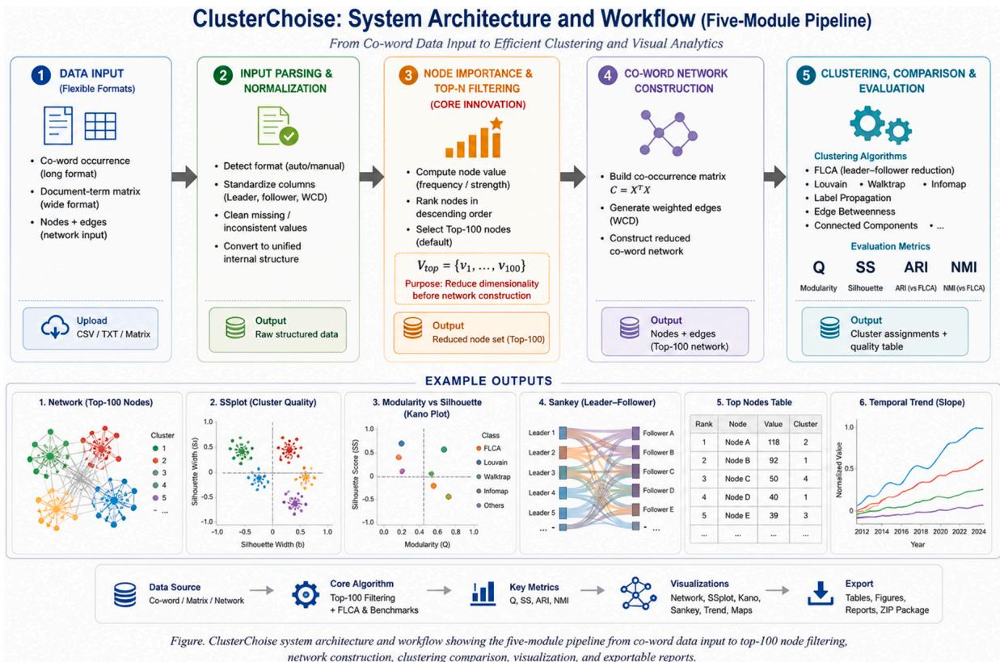
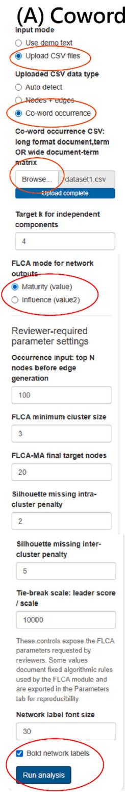
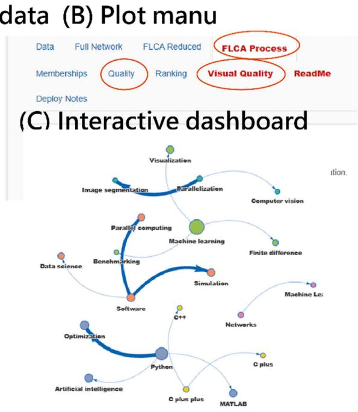
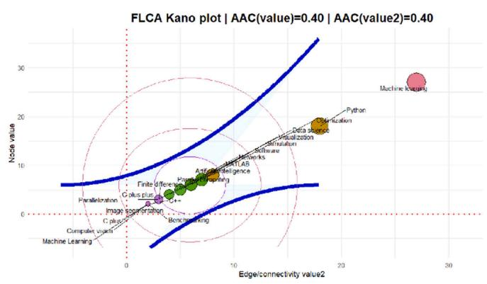
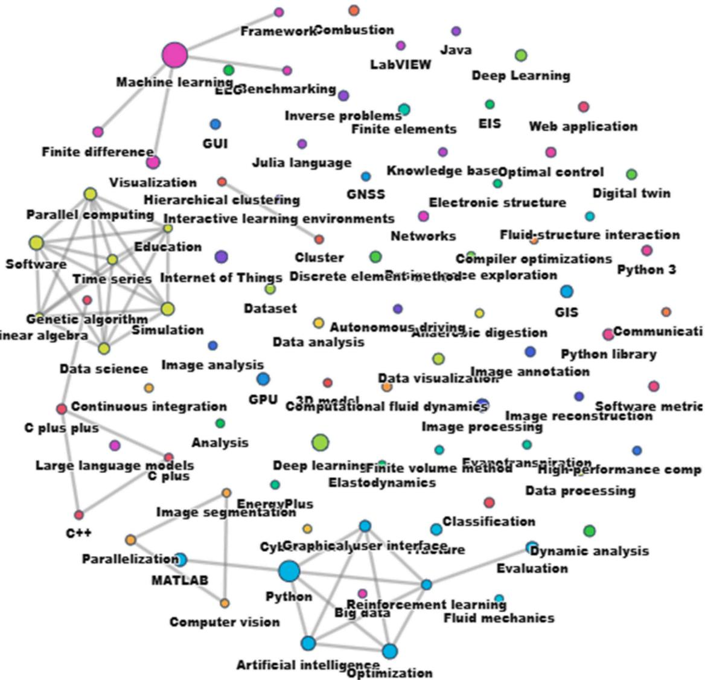
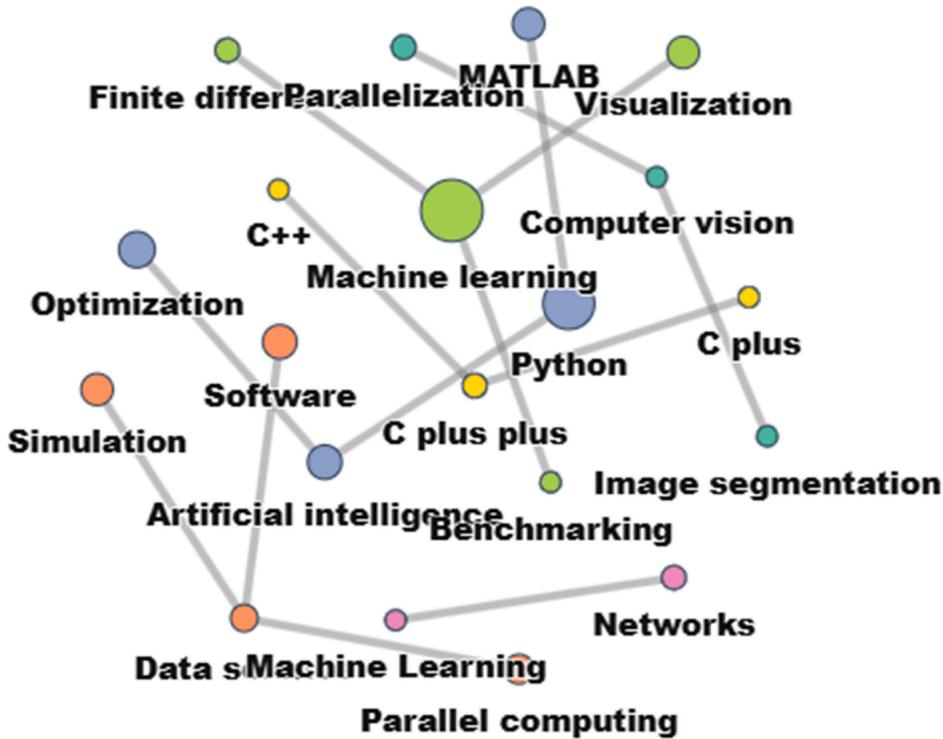
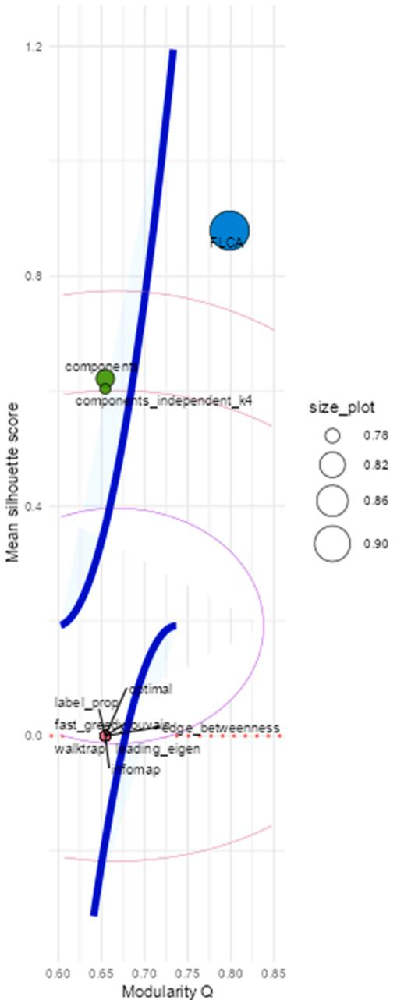
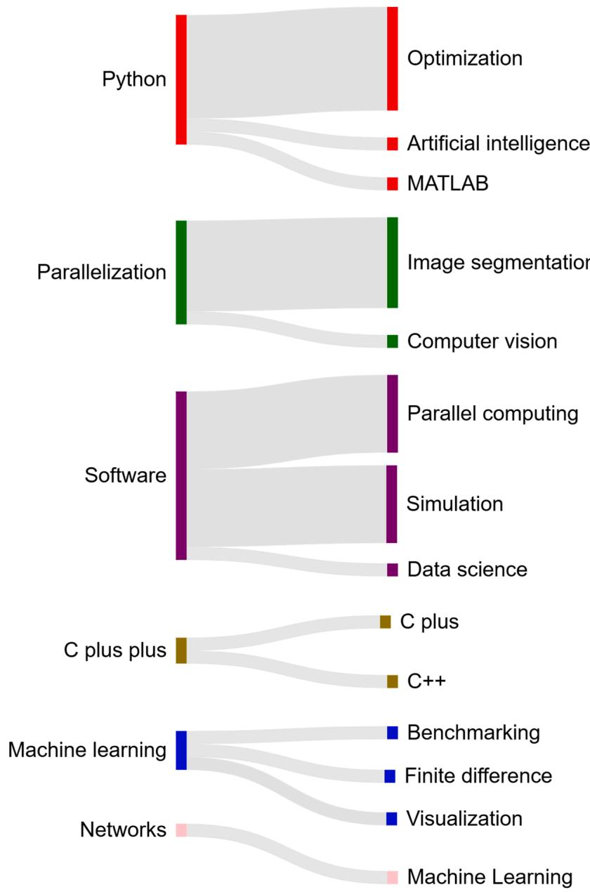
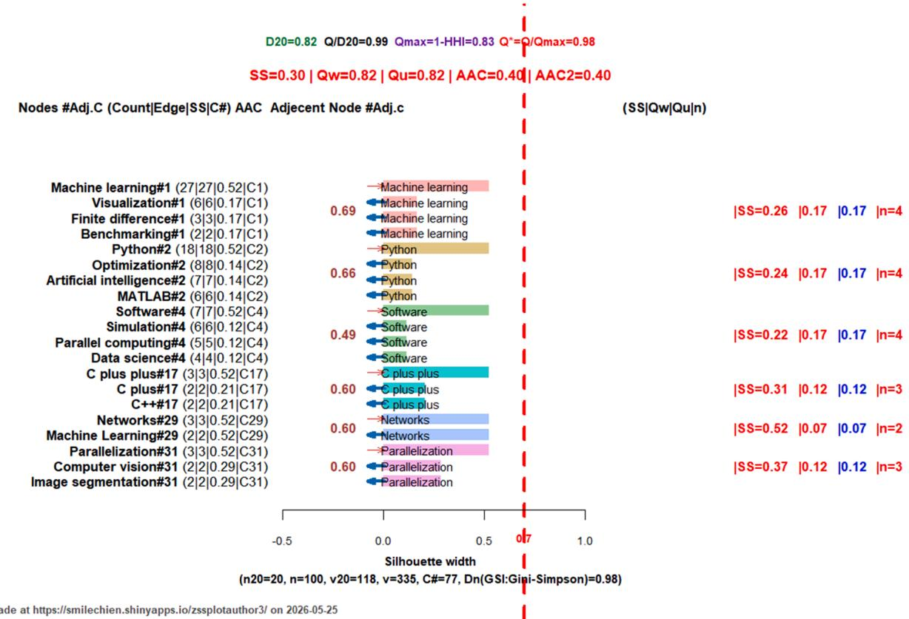

Original Software Publication
ClusterChoice: a web-based tool for interpretable clustering and algorithm comparison in bibliometric networks¶
Tsair-Wei Chien a, Lifan Chen b,*, Willy Chou c,d,**
a Department of Medical Research, Chi Mei Medical Center, Tainan, Taiwan
b Department of Nursing, An Nan Hospital, China Medical University, Tainan, Taiwan
c Department of Leisure and Sports Management, CTBC University, Tainan, Taiwan
d Department of Physical Medicine and Rehabilitation, Chi-Mei Hospital, Liouying, Tainan, Taiwan
A R T I C L E I N F O¶
Keywords: ClusterChoice Bibliometrics Cluster analysis FLCA Network visualization
A B S T R A C T¶
Cluster analysis is widely used in bibliometric research, but dense networks often reduce readability, and clustering algorithms or quality indicators are frequently underreported. This study introduces ClusterChoice, a web-based R Shiny application for selecting interpretable clustering structures in bibliometric networks. The software accepts co-word occurrence, document–term matrix, and node–edge data, applies top-node filtering to reduce computational burden, and compares 11 clustering algorithms using modularity Q, mean silhouette score, ARI, and NMI. A SoftwareX bibliographic dataset was used to demonstrate practical utility. In the comparative analysis of 76 nodes(i.e., with many singleton with SS=0), most conventional algorithms showed similar modularity (Q = 0.65) but near-zero silhouette scores, indicating weak cohesion despite acceptable partitioning. Components-based methods improved silhouette values to 0.60–0.62. In contrast, FLCA achieved the highest modularity (Q = 0.80) and mean silhouette score (0.78), producing clearer leader–follower clusters. The SSplot for the top 20 nodes across six clusters further showed positive silhouette values, supporting cluster stability. By integrating top-node filtering, FLCA-based clustering, algorithm comparison, network visualization, SSplots, Kano plots, and exportable reports, ClusterChoice provides a practical and reproducible tool for improving bibliometric cluster selection and network-quality assessment.
• Compares 11 clustering algorithms for bibliometric network analysis.
• Uses top-node filtering to reduce dense co-word network complexity.
• Reports modularity, silhouette, ARI, and NMI with exportable visual outputs.
Metadata¶
| Nr | Code metadata description | Metadata |
| C1 | Current code version | v1.0 |
| C2 | Permanent link to code/repository used for this code version | https://github.com/smilechien/clusterchoice/ |
| C3 | Permanent link to reproducible capsule | https://onlinerasch.shinyapps.io/flcacompare/ |
| C4 | Legal code license | MIT License |
| C5 | Code versioning system used | git |
(continued )
| C6 | Software code languages, tools and services used | R |
| C7 | Compilation requirements, operating environments and dependencies | Shiny, DT, igraph, dplyr, tibble, readr, visNetwork, RColorBrewer, ggplot2, ggrepel, and circlize |
| C8 | Online demo MP4 video | https://youtu.be/uRhJljxbPS0 |
| C9 | Support email for questions | rasch.smile@gmail.com |
Table 1
Pseudocode of the FLCA leader–follower clustering procedure.
| Stage | Pseudocode |
| Input | Node table with name, value, optional value2; edge table with paired nodes and WCD; parameters: cluster_by, top_clusters = 5, base_per_cluster = 4, target_n = 20, min_size = 3, intra_delta = 2, inter_delta = 5. |
| Output | Final node clusters, leader-follower edges, top-20 sampled nodes, modularity Q, and silhouette statistics. |
| 1 | Normalize node names and numeric scores. |
| 2 | Select active FLCA score: use value for maturity mode or value2 for influence mode. |
| 3 | Sort nodes by descending active score and assign initial unique cluster IDs. |
| 4 | Normalize edges into Leader, Follower, and WCD. |
| 5 | For each edge, assign the higher-scored node as Leader and the lower-scored node as Follower. |
| 6 | For each follower, retain only one strongest leader link using maximum WCD; break ties by leader score and leader rank. |
| 7 | Identify true leaders as nodes with at least two followers; always retain the top-scored node as a leader. |
| 8 | Iteratively merge each non-leader follower into its leader's cluster until no cluster assignment changes. |
| 9 | Detect small clusters with fewer than min_size members and merge them upward through their leader connection. |
| 10 | If only one cluster remains, split it into two rank-based subclusters to avoid a trivial one-cluster result. |
| 11 | Renumber clusters sequentially according to the highest active score within each cluster. |
| 12 | Apply major sampling: rank clusters by size and total active score. |
| 13 | Select the top top_clusters clusters. |
| 14 | From each selected cluster, take up to base_per_cluster highest-scored nodes. |
| 15 | Fill remaining positions by round-robin sampling from selected clusters until target_n = 20 is reached. |
| 16 | If still fewer than 20 nodes, fill by global active-score ranking. |
| 17 | Rebuild the sampled edge set using only edges among selected top-20 nodes. |
| 18 | Compute modularity Q for the final sampled clusters using weighted and unweighted undirected edges. |
| 19 | Compute silhouette statistics using distance transformed from edge weight: stronger WCD indicates shorter distance. |
| 20 | Apply intra-cluster and inter-cluster penalties for missing edges using intra_delta and inter_delta. |
| 21 | Return final clusters, leader-follower relations, sampled top-20 network, modularity Q, and silhouette values. |
Note. A leader is operationally defined as a higher-ranked node that attracts one or more followers; Log status generated by FLCA is shown in Supplemental Appendix 1; flca_ma_sil_module.R in Github at https://github.com/smilechien/c lusterchoice/
1. Motivation and significance¶
Clustering is a fundamental task in network analysis and community detection, aiming to partition nodes into meaningful groups based on structural relationships. Widely used algorithms, such as Louvain, Walktrap, Infomap, and label propagation, have been extensively applied in bibliometrics and complex network studies due to their computational efficiency and scalability [1–3]. However, these methods primarily optimize global criteria, such as modularity or information flow, and often overlook structural constraints required for interpretable clustering results [4].
1.1. Research gaps¶
A key limitation of existing approaches is the absence of explicit hierarchical organization within clusters [5]. In many real-world networks—particularly bibliometric and collaboration networks—relationships naturally exhibit leader–follower dynamics, where central nodes (leaders) organize or influence surrounding nodes (followers) [6–12]. Conventional algorithms do not enforce such structures, often producing clusters with weak cohesion, fragmented groupings, or leaders lacking sufficient supporting members [13]. Moreover, dense co-word or collaboration networks frequently contain excessive nodes and edges, resulting in cluttered layouts that hinder interpretation [14]. Empirical studies further show that some algorithms may achieve acceptable modularity while yielding low or even negative silhouette scores, indicating poor internal cohesion [7,9].
These issues are particularly critical in bibliometric analysis. Author collaboration networks are widely used to examine how scientific knowledge is generated and organized, where nodes represent authors and edges capture co-authorship or intellectual relationships [15]. In practice, such collaborations are rarely flat; instead, they often reflect implicit hierarchies in which senior or highly productive researchers act as leaders, while junior collaborators form follower groups [8,9,16]. Therefore, clustering methods should not only partition networks into communities but also reveal interpretable internal structures that reflect these hierarchical relationships.
However, traditional clustering algorithms do not guarantee that clusters satisfy basic interpretability conditions, such as having a clear leader, sufficient members, and coherent internal connections [6]. This limitation may lead to misleading conclusions in bibliometric studies, particularly when interpreting academic leadership, mentoring capacity, or collaborative structures.
1.2. ClusterChoice and FLCA¶
To address these gaps, this study introduces ClusterChoice [17], a web-based application designed to improve clustering interpretability and efficiency in bibliometric networks. The system integrates (i) a top-node filtering strategy to reduce network complexity before clustering, (ii) a leader–follower-oriented clustering framework based on Following Leader Clustering Algorithm (FLCA) [8,9,16], and (iii) a comparative evaluation module across multiple algorithms using metrics such as modularity, silhouette score, ARI, and NMI [18,19]. By combining computational reduction with structural constraints, ClusterChoice[17] enables users to identify clustering solutions that are both quantitatively robust and visually interpretable.
1.3. Study aims¶
The objective of this study is to evaluate whether FLCA can produce more coherent and interpretable clustering results than conventional methods. Using bibliometric datasets, ClusterChoice compares multiple clustering algorithms and examines their ability to reveal meaningful collaboration structures while satisfying key clustering principles. Through this approach, the study aims to provide a practical and reproducible framework for selecting appropriate clustering methods in bibliometric and network analysis.
2. Software description and methodology¶
ClusterChoise is a web-based bibliometric clustering and network analysis application developed in R with a Shiny interface. It is designed to transform co-word occurrence data or network-based inputs into interpretable clustering structures while reducing computational burden through an adaptive node-selection strategy. Unlike conventional clustering tools that operate on full-scale networks, ClusterChoise introduces a top-N node preselection mechanism (default: top 100 nodes by importance to reduce computation with many nodes and relations) to improve efficiency without sacrificing interpretability.
The application integrates data preprocessing, network construction, clustering comparison, and visualization into a unified workflow. It supports multiple clustering algorithms, including FLCA (Table 1) and benchmark methods, and provides evaluation metrics such as silhouette score, modularity, and agreement indices (ARI, NMI) [18,19]. The system outputs interpretable visualizations including co-word networks, SSplots [12], and Sankey-style summaries [5], enabling users to assess clustering quality and thematic structure in a reproducible environment.

Fig. 1. ClusterChoice Workflow with 5 modules.
Step 2: Node importance estimation and top-N selection
2.1. System architecture¶
ClusterChoise follows a structured five-step analytical pipeline:
-
Data acquisition and normalization
-
Node importance estimation and top-N selection
-
Co-word network construction
-
Clustering and comparative evaluation
-
Visualization and export
This architecture converts raw co-word occurrence data or document-derived inputs into a reduced yet informative network rep resentation, followed by clustering analysis and visual interpretation.
A key design principle is computational reduction before clustering. Instead of constructing and analyzing a full high-dimensional network, ClusterChoise first identifies the most informative nodes and restricts downstream computation to this subset. This improves scal ability and stability, particularly for large bibliometric datasets.
Step 1: Data acquisition and normalization
The system accepts multiple input formats, including:
• Co-word occurrence tables (long format: document × term)
• Wide document-term matrices
• Predefined node–edge network data
Uploaded data are parsed into a standardized internal representation. Text-based inputs are transformed into term-level structures, while network inputs are normalized into node and edge tables with consistent naming conventions (e.g., Leader, follower, WCD).
This step ensures compatibility across heterogeneous data sources and prepares the dataset for subsequent node evaluation and filtering.
To reduce computational complexity, ClusterChoise applies a node filtering strategy prior to network construction. Each node is assigned an importance score based on occurrence frequency or weighted connectivity (e.g., co-occurrence strength).
Nodes are then ranked in descending order, and only the top-N nodes (default: 100) are retained:
$$ \mathscr {V} _ {t o p} = v _ {1}, v _ {2}, \dots , v _ {1 0 0}, \text {where} v a l u e (v _ {i}) \geq v a l u e (v _ {i + 1}),\tag{1} $$
This step is critical because co-word networks scale quadratically with the number of nodes. By limiting the node set before edge generation, the algorithm significantly reduces memory usage and computational time.
Importantly, this design preserves the core thematic structure of the dataset, as high-frequency or high-impact terms typically dominate semantic representation.
Step 3: Co-word network construction¶
After node selection, ClusterChoise constructs a weighted co-word network based only on the filtered node set. Edges are generated using co-occurrence relationships:
• In document-based data: two terms are linked if they co-occur within the same unit (e.g., sentence or document)
• In matrix data: co-occurrence is derived via matrix multiplication
• In edge input: weights are directly used
The co-occurrence matrix is defined as:
$$ C = X ^ {T} X\tag{2} $$
where X is the binary document-term matrix restricted to top-N nodes. Each edge weight represents the frequency or strength of co-

Fig. 2. ClusterChoice homepage and plot menu.

(D) Co-word occurrences

(E) Download list¶
Download list for FLCA Process outputs Use these buttons to export the selected FLCA Process tables and publication-style plot PNGs generated under the current maturity/influence mode and major-sampling settings
Selected nodes All FLCA nodes Leader-follower e Cluster summary CSV
AAC summary CSSSplot PNG
Kano PNG
Circular chord PNG
SankeyMATIC TSankeyMATIC noSankeyMATIC ed Chord edges CSV
occurrence (WCD, weighted centrality degree) clustering and visualization.
• FLCA (Following Leader Clustering Algorithm)
• Louvain
• Walktrap
Step 4: Clustering and comparative evaluation
• Infomap
• Label propagation
ClusterChoise supports multiple clustering algorithms, including:
• Edge betweenness
• Connected components

Fig. 3. The traditional network presents a dense structure with numerous nodes and edges.
A distinguishing feature is the inclusion of FLCA-based reduction, where each node connects to its strongest neighbor, producing a simplified leader–follower structure.
Clustering quality is evaluated using:
• Modularity (Q) for network partition strength
• Silhouette score (SS) for cluster cohesion and separation
• Adjusted Rand Index (ARI) and Normalized Mutual Information (NMI) for agreement comparison with FLCA
This multi-metric framework allows users to compare clustering outcomes across methods and identify the most interpretable structure.
Step 5: Visualization and export
ClusterChoise generates multiple visual outputs:
• Co-word network graphs (leader–follower structure)
• SSplots for cluster quality assessment
• Kano-style plots for algorithm comparison
• Sankey diagrams for flow-based interpretation
These visualizations transform clustering results into interpretable insights, enabling users to understand thematic organization and cluster
reliability.
The export module provides:
• Node and edge tables
• Clustering results
• High-resolution Figures
This supports reproducibility and facilitates integration into academic manuscripts.
2.2. Computational optimization strategy¶
A central innovation of ClusterChoise is its pre-clustering reduction strategy, where node filtering is applied before network con struction and clustering.
Compared to traditional approaches:
Conventional workflow:
full nodes → full edges → clustering
• ClusterChoise workflow:
top-N nodes → reduced edges → clustering

Fig. 4. The FLCA-based network (Fig. 4) produces a simplified leader–follower structure with fewer edges.
This shift reduces computational complexity from:
$$ O \big (n ^ {2} \big) \to O \big (k ^ {2} \big), k \ll n,\tag{3} $$
where n is the original number of nodes and k is the selected subset.
This design is particularly effective for large bibliometric datasets, where full co-word matrices can be computationally expensive and visually cluttered.
2.3. Implementation layers¶
ClusterChoise consists of four layers:
-
Interface layer (Shiny) – user input, parameter selection, visualization
-
Preprocessing layer – data parsing and normalization
-
Analytical engine – node filtering, network construction, clustering
-
Rendering layer – visualization and export
This modular design separates user interaction from computation, ensuring both usability and reproducibility.
2.4. ARI and NMI as similarity measures for clustering algorithms¶
ARI and NMI measure how similar each clustering result is to the reference clustering structure [9,10].
Adjusted Rand Index (ARI) evaluates whether pairs of nodes are assigned consistently across two clustering methods. A value of 1.00 means perfect agreement, whereas values near 0 indicate random-level agreement.
Normalized Mutual Information (NMI) measures how much information one clustering result shares with another. A value of 1.00 also indicates complete consistency between two clustering solutions.
2.5. User workflow¶
From a user perspective, the workflow is shown below (Fig. 2):
-
Upload co-word or document data
-
Select analysis settings (e.g., node limit, clustering method)
-
Run analysis
-
Inspect network and clustering results
-
Export outputs
This streamlined pipeline enables efficient exploration of bibliometric structures while maintaining methodological rigor.
To illustrate the use of ClusterChoice [17], three main functions are shown in Fig. 2 [21]: (1) uploading co-word occurrence data by selecting Upload CSV files, choosing Co-word occurrence, browsing the dataset file (dataset1.csv) [20], running the analysis, and viewing both Full Network and FLCA Reduced outputs; (2) examining clustering performance through the Quality and Visual Quality tabs; and (3) opening the FLCA Process tab to inspect visual results.
Additionally, the interface supports FLCA parameter configuration, maturity/influence modes, clustering-quality evaluation, and exportable visual outputs including network dashboards, SSplots, Kano plots, Sankey diagrams, and downloadable publication-ready figures.
3. Illustrative examples¶
3.1. Data source¶
Articles published in SoftwareX were retrieved from Web of Science core collection(WoSCC). The coverage period was from 2017 to 2026. Author-defined keywords were applied to ClusterChoice, ensuring full transparency and facilitates reproducibility for future bibliometric investigations.
Study data are deposed in Github [20]. Since all articles stored in WoSCC do not contain identifiable patient information, ethical review approval was not required.
3.2. Results of coword keyword occurrences in ClusterChoice¶
The traditional network (Fig. 3) presents a dense structure with numerous nodes and edges, resulting in visual clutter and limited
juality of clustering algorithms: modularity Q vs mean silhouette scoi¶

Fig. 5. Quality of clustering algorithm in comparison by modularity Q and mean silhouette score: Note. FLCA at top right corner with Modularity Q and SS are shown on x- and y-axes, respectively.
interpretability.
In contrast, the FLCA-based network (Fig. 4) produces a simplified leader–follower structure with fewer edges, clearly defined clusters, and improved readability, facilitating more interpretable and meaningful clustering results.
3.3. Comparative analysis of clustering algorithms¶
Fig. 5 and Table 2 compare clustering quality across algorithms using modularity Q and mean silhouette score. Most conventional algorithms showed similar modularity $( Q = 0 . 6 5 )$ but near-zero silhouette scores, indicating weak internal cohesion. Components-based methods improved silhouette values (0.60–0.62).
In Table 2, most conventional algorithms have ARI ¼ 1.00 and NMI ${ \bf \mu } = { \bf 1 . 0 0 } ;$ , meaning they produced the same or highly identical partition structure under the full-edge setting. However, their silhouette scores were mostly 0.00, showing that agreement alone does not guarantee good cluster cohesion due to many singleton nodes in network, as shown in Fig. 3. FLCA is therefore reported separately because it uses a reducedconsistent leader–follower structure, achieving higher modularity (0.80) and silhouette (0.78).
Importantly, both maturity and influence modes in Fig. 2 allow FLCA to identify leaders based on either node frequency (value) or edge connectivity strength (value2). In this case, both modes generate identical data patterns in top 20 nodes shown in Table 2.
3.4. FLCA-based network charts¶
Figs. 6 and 7 present the FLCA-based visualization results. Fig. 2C illustrates an interactive leader–follower network, where major nodes (e.g., Machine learning, Python, Software) act as cluster leaders with directed links to followers, providing a clear and interpretable positive silhouette values (SS ≈ 0.22–0.52), indicating good cluster cohesion and separation, supporting the stability of the FLCA clustering.
Table 2
Comparative performance of clustering algorithms.
| No. | Method | n-cluster | modularity | silhouette | ARI | NMI | status | note | edges |
| 1 | Louvain | 76 | 0.65 | 0.00 | 1.00 | 1.00 | ok | full | |
| 2 | Optimal | 76 | 0.65 | 0.00 | 1.00 | 1.00 | ok | full | |
| 3 | Components | 76 | 0.65 | 0.62 | 1.00 | 1.00 | ok | full | |
| 4 | edge_betweenness | 76 | 0.65 | 0.00 | 1.00 | 1.00 | ok | full | |
| 5 | label_prop | 76 | 0.65 | 0.00 | 1.00 | 1.00 | ok | full | |
| 6 | Infomap | 76 | 0.65 | 0.00 | 1.00 | 1.00 | ok | full | |
| 7 | leading_eigen | 76 | 0.65 | 0.00 | 1.00 | 1.00 | ok | full | |
| 8 | Walktrap | 76 | 0.65 | 0.00 | 1.00 | 1.00 | ok | full | |
| 9 | fast_greedy | 76 | 0.65 | 0.00 | 1.00 | 1.00 | ok | full | |
| 10 | FLCA by maturity | 76 | 0.80 | 0.78 | ok | a | b | ||
| 10 | FLCA by influence | 76 | 0.80 | 0.78 | ok | a | b | ||
| 11 | Components | 76 | 0.65 | 0.60 | 1.00 | 1.00 | ok | c |
Note: a.Weak edges dropped until target number of components is reached; b. reduced_consistent; c.Weak edges dropped until target number of components is reached; the higher overall silhouette value (\~0.78) was calculated from the broader FLCA clustering structure generated from the larger node set (approximately top 100 nodes distributed across multiple clusters)..

Fig. 6. Sankey plot for displaying Top 20 nodes with a single edge from a follower to a corresponding leader.
hierarchical structure. Fig. 6 displays an Sankey-style network. Fig. 7 shows the SSplot of the top 20 nodes across six clusters, with mostly

Fig. 7. Silhouette score plot for top 20 nodes in top 6 clusters: Note. the lower silhouette values (\~0.22–0.52) were calculated from the final major-sampling visualization subset consisting of the top 20 representative nodes distributed across only six major clusters.
3.4.1. To examine whether the study achieved its goals¶
This section evaluates whether ClusterChoice achieved its main goals: reducing network complexity, improving cluster interpretability, and supporting algorithm selection. The results were examined using visual readability, leader–follower structure, modularity Q, silhouette score, and comparative algorithm performance. This assessment confirms that the proposed FLCA workflow provides clearer and more reliable clustering outputs than conventional network clustering approaches.
4. Impact¶
Unlike traditional bibliometric tools such as CiteSpace [22], VOS viewer [23], and bibliometrix [24], ClusterChoice[17] integrates FLCA-based leader–follower clustering [8,9,16] with pre-analysis filtering, cluster-quality evaluation, and publication-oriented visualization within a unified browser-based workflow. Rather than focusing solely on network generation, the framework emphasizes interpretable cluster structures, standardized evaluation, and reproducible compari son of multiple clustering algorithms [4,7,12].
The practical impact of the framework lies primarily in balancing computational efficiency, structural interpretability, and reproduc ibility. The proposed top-N node preselection strategy (default: top 100 nodes) substantially reduces computational burden in dense biblio metric networks by limiting the number of pairwise node relationships processed during clustering and visualization. This filtering mechanism improves runtime stability and visual readability while preserving the dominant thematic structure of the network [7]. However, low-frequency nodes may still contain potentially meaningful semantic information, and therefore the filtering strategy represents a tradeoff between computational tractability and fine-grained thematic completeness.
ClusterChoice [17] further incorporates a structure-aware FLCA framework based on leader–follower assignment, maximum-association filtering, and major-sampling stabilization [8–12,16]. Compared with several conventional clustering methods evaluated in this study, FLCA produced higher overall modularity $( Q \approx 0 . 8 0 )$ together with substantially improved weighted mean silhouette scores $( S S \approx 0 . 7 8 – 0 . 8 8 ) _ { \scriptscriptstyle ; }$ indicating stronger global edge separation and improved node-level compactness. In contrast, several conventional methods produced acceptable modularity values but near-zero silhouette scores, reflecting fragmented cluster structures with weak local cohesion. These findings suggest that modularity alone may not sufficiently represent clustering quality in highly fragmented bibliometric networks [4,7,12].
The integrated evaluation framework additionally combines modularity (Q), silhouette score (SS), adjusted Rand index (ARI), and normalized mutual information (NMI), enabling objective comparison of clustering structures generated by different algorithms [4,12]. This design improves methodological transparency and addresses the limited reproducibility and inconsistent reporting frequently observed in bibliometric network studies [7,12].
From a software perspective (Figs. 1 and 2), the Shiny-based implementation supports multiple input formats and generates exportable visual outputs, including network diagrams, SSplots [7,12], Sankey diagrams [6], Kano plots [25], and structured summary tables. The browser-based workflow improves accessibility for users without advanced programming expertise while supporting reproducible bibliometric analysis and visualization.
Nevertheless, several limitations should be noted. First, the top-N filtering strategy may exclude low-frequency but potentially meaningful nodes, which may affect detailed semantic interpretation. Second, the leader–follower assumption used in FLCA may not fully capture overlapping or non-hierarchical community structures [8–12]. Third, clustering performance may vary according to network density, dataset characteristics, and parameter settings, requiring cautious interpreta tion. Fourth, the current validation was primarily conducted using a SoftwareX bibliometric dataset, and broader cross-domain evaluation remains necessary to further establish generalizability. Finally, scalability for extremely large bibliometric networks may require future optimization using sparse-matrix processing or parallel computation strategies.
Overall, ClusterChoice [17] contributes a practical and reproducible framework for bibliometric clustering analysis by integrating computational efficiency, interpretable network structure, objective cluster-quality evaluation, and publication-oriented visualization within a unified analytical environment.
5. Conclusion¶
ClusterChoice provides an efficient and interpretable framework for bibliometric clustering. By combining top-N node filtering, FLCA-based leader–follower clustering, and comparative quality metrics, it reduces network complexity while improving cluster readability and evaluation transparency. The results support ClusterChoice as a practical webbased tool for selecting suitable clustering algorithms and generating reproducible visual outputs for bibliometric and network analysis.
Data availability¶
The data are public and available at Github.
CRediT authorship contribution statement¶
Tsair-Wei Chien: Methodology. Lifan Chen: Conceptualization. Willy Chou: Investigation.
Declaration of competing interest¶
The authors declare that they have no known competing financial interests or personal relationships that could have appeared to influence the work reported in this paper.
Acknowledgments¶
We would like to acknowledge Github which allowing us to deposit our R code and datasets at no charges.
Supplementary materials¶
Supplementary material associated with this article can be found, in the online version, at doi:10.1016/j.softx.2026.102794.
References¶
[1] Hubert L, Arabie P. Comparing partitions. J. Classif. 1985;2(1):193–218.
[2] Strehl A, Ghosh J. Cluster ensembles—a knowledge reuse framework fo combining multiple partitions. J. Mach. Learn. Res. 2002;3:583–617.
[3] Newman MEJ. Modularity and community structure in networks. Proc. Natl. Acad. Sci. U S A 2006;103(23):8577–82.
[4] Rousseeuw PJ. Silhouettes: a graphical aid to the interpretation and validation of cluster analysis. J. Comput. Appl. Math. 1987;20:53–65.
[5] Blondel VD, Guillaume JL, Lambiotte R, Lefebvre E. Fast unfolding of communities in large networks. J. Stat. Mech. 2008;2008(10):P10008.
[6] Lim SW, Chou W, Chen L. SankeyNetwork: A clear and concise visualization too for bibliometric data. MethodsX 2025;14:103379.
[7] Chuang HY, Chou W. SilhouetteScoreinR: Beyond traditional network layouts by leveraging local cohesion and nearest neighbor separation. MethodsX 2025;15: 103622. https://doi.org/10.1016/j.mex.2025.103622. Published 2025 Sep 11.
[8] Cheng TY, Ho SY, Chien TW, Chow JC, Chou W. A comprehensive approach for clustering analysis using follower-leading clustering algorithm (FLCA): Bibliometric analysis. Medicine (Baltimore) 2023;102(42):e35156. https://doi. org/10.1097/MD.0000000000035156.
[9] Cheng YZ, Chien TW, Ho SY, Chou W. Visual impact beam plots: Analyzing research profiles and bibliometric metrics using the following-leading clustering algorithm (FLCA). Medicine (Baltimore) 2023;102(28):e34301. https://doi.org/ 10.1097/MD.0000000000034301.
[10] Chien TW, Chou W. Visualizing leadership classifications in rectangular data using a basket model and co-word network analysis: a case study of U.S. HCAHPS survey results. BMC Med. Res. Methodol. 2025 Aug 20;25(1):195. https://doi.org/ 10.1186/s12874-025-02643-w. PMID: 40836275; PMCID: PMC12366396.
[11] Li MJ, Lai FJ. Classifying research leadership in infantile hemangioma studies: A bibliometric analysis using Kano diagrams and absolute advantage coefficients. Medicine (Baltimore) 2025;104(40):e44905. https://doi.org/10.1097 MD.0000000000044905
[12] Chien TW, Chen L, Chou W. SilhouettePlot: An R-based App Integrating Silhouette Scores into Network Plots for Enhanced Clarity and Meaning. SoftwareX 2026;34: 102652.
[13] Rosvall M, Bergstrom CT. Maps of random walks on complex networks reveal community structure. Proc. Natl. Acad. Sci. U S A 2008;105(4):1118–23.
[14] Pons P, Latapy M. Computing communities in large networks using random walks. J. Graph Algorithms Appl. 2006;10(2):191–218.
[15] Traag VA, Waltman L, van Eck NJ. From Louvain to Leiden: guaranteeing well connected communities. Sci. Rep. 2019;9(1):5233.
[16] Yen PC, Chou W, Chien TW, Jen TH. Analyzing fulminant myocarditis research trends and characteristics using the follower-leading clustering algorithm (FLCA): A bibliometric study. Medicine (Baltimore) 2023;102(26):e34169. https://doi.org/ 10.1097/MD.0000000000.
[17] Chien TW. ClusterChoice. available at, https://smilechien.shinyapps.io/flcacompa re/; May 1, 2026.
[18] Hubert L, Arabie P. Comparing partitions. J. Classif. 1985;2(1):193–218.
[19] Strehl A, Ghosh J. Cluster ensembles—a knowledge reuse framework for combining multiple partitions. J. Mach. Learn. Res. 2002;3:583 617.
[20] Github. ClusterChoice depository. May 1, 2026 available at https://github.com/ milechien/clusterchoice/
[21] Chien TW. ClusterChoice via MP4 video. May 1, 2026 available at https://youtu. be/uRhJljxbPS0.
[22] Chen C. CiteSpace II: Detecting and visualizing emerging trends and transient patterns in scientific literature. J. Am. Soc. Inf. Sci. Technol. 2006;57(3):359–77. https://doi.org/10.1002/asi.20317.
[23] van Eck NJ, Waltman L. VOSviewer, a computer program for bibliometric mapping. Scientometrics 2010;84(2):523–38. https://doi.org/10.1007/s11192- 009-0146-3.
[24] Aria M, Cuccurullo C. bibliometrix: An R-tool for comprehensive science mapping analysis. J. Informetr. 2017;11(4):959 75. https://doi.org/10.1016/j. joi.2017.08.007.
[25] Kano Noriaki, Seraku N, Takahashi F, Tsuji S. Attractive quality and must-be quality. J. Jpn. Soc. Qual. Control 1984;14(2):39 48.